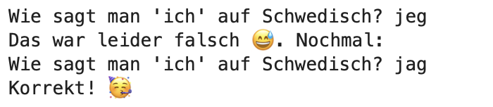

Lösungen zu den Zusatzübungen zum zweiten Notebook#
Schreibe eine Code-Zeile, die folgende Bedingungen überprüft:
Berlin hat mehr Einwohner:innen als München
In Hamburg wohnen entweder weniger Menschen oder gleich viele wie in Berlin
München ist Hamburg in Sachen Einwohnerzahl unterlegen.
📌 Herausforderung: Überprüfe zusätzlich im gleichen Statement, ob Berlin nicht kleiner als München ist, was die Einwohnerzahl anbelangt.
berlin = 3677472
hamburg = 1853935
muenchen = 1487708
print(berlin > muenchen and hamburg <= berlin and muenchen < hamburg)
#herausforderung
print(berlin > muenchen and hamburg <= berlin and muenchen < hamburg and not berlin < muenchen)
True
True
Formuliere den folgenden Code so konzis wie möglich in natürlicher Sprache:
weekly_rain_chance_forecast = [0.2, 0.7, 0.8, 0.05, 0.95, 0.3, "na"]
for daily_forecast in weekly_rain_chance_forecast:
if type(daily_forecast) != float:
print("No prognosis possible due to missing value")
continue
if daily_forecast < 0.5:
print("No need to carry an umbrella 🌤️")
else:
print("Carry an umbrella with you ☔️")
No need to carry an umbrella 🌤️
Carry an umbrella with you ☔️
Carry an umbrella with you ☔️
No need to carry an umbrella 🌤️
Carry an umbrella with you ☔️
No need to carry an umbrella 🌤️
No prognosis possible due to missing value
Natürlichsprachlich formuliert: „Wenn die Regenwahrscheinlichkeit an einem Tag in den nächsten sieben Tagen 50% übersteigt, nimm an diesem Tag einen Schirm mit. Bei niedrigerer Regenwahrscheinlichkeit als 50% brauchst Du keinen Schirm mitzunehmen. Sollte noch keine Regenwahrscheinlichkeit vorliegen, kann ich leider keine Empfehlung abgeben.“
Mit
monthly_salarysoll das monatliche Einkommen einer bestimmten Person referenziert werden. Beträgt es 6000€ oder mehr, fällt es in die höchste Einkommensklasse. Bei einem Betrag von unter 2000€ handelt es sich um ein Einkommen in der tiefsten Einkommensklasse. Zwischen 2000€ und unter 3000€, 3000€ und unter 4500€ sowie 4500€ und unter 6000€ fällt es in die Einkommesklasse „untere Mitte“, „Mitte“ bzw. „obere Mitte“. Formuliere bedingte Anweisungen, die die Einkommensklasse je nach Höhe vonmonthly_salaryausgeben.📌 Herausforderung: Was passiert, wenn das Einkommen anstatt als Zahl z.B. so vorliegt: „dreitausendsiebenhundert“? Und was, wenn mit
monthly_salaryein noch weniger sinnvolles Objekt referenziert wird, z.B. eine Liste? Verhindere in jedem Fall, dass es zu einer Fehlermeldung kommt.
monthly_salary = 3000
income_class = ""
if monthly_salary < 2000:
income_class = "low"
elif monthly_salary < 3000:
income_class = "lower middle"
elif monthly_salary < 4500:
income_class = "middle"
elif monthly_salary < 6000:
income_class = "upper middle"
else:
income_class = "high"
print(income_class)
monthly_salary = "siebentausend"
income_class = ""
#mit Herausforderung (drei semantisch identische Lösungen)
if not type(monthly_salary) == int and not type(monthly_salary) == float:
#if type(monthly_salary) != int and type(monthly_salary) != float:
#if type(monthly_salary) not in [int, float]:
print("invalid income")
elif monthly_salary < 2000:
income_class = "low"
elif monthly_salary < 3000:
income_class = "lower middle"
elif monthly_salary < 4500:
income_class = "middle"
elif monthly_salary < 6000:
income_class = "upper middle"
else:
income_class = "high"
print(income_class)
middle
invalid income
Erstelle einen string aus den jeweils letzten Zeichen jeden Namens in
namesund lass ihn Dir ausgeben.
names = ["Hagen", "Lena", "Selim", "Brigitte", "Hermann"]
string = ""
for name in names:
string += name[-1]
print(string)
namen
Erstelle abermals einen string bestehend aus ausgewählten Zeichen jeden Namens in
names. Diesmal soll der erste Buchstabe für den neuen string der erste Buchstaben des ersten Namens sein, der zweite Buchstabe für den neuen string soll der zweite Buchstabe des zweiten Namens sein, etc. Welcher neue Namen entsteht so?📌 Herausforderung: Verwende die
range-Funktion zur Lösung der Übung (sofern Du es nicht bereits getan hast).
names = ["Hagen", "Lena", "Selim", "Brigitte", "Hermann"]
#Lösung mit Zählervariable
string = ""
i = 0
for name in names:
string += name[i]
i+=1
print(string)
#Herausforderung: Lösung mit range-Funktion
string= ""
for i in range(len(names)):
string += names[i][i]
print(string)
Helga
Helga
Erstelle einen weiteren string, indem Du bei jedem Namen auf
namesüber die Buchstaben iterierst und jeweils das zweite, vierte, sechste, etc. Zeichen an den neuen string hängst. Der string beginnt also mit „a“ und „e“ aus „Hagen“, gefolgt von „e“ aus „Lena“ etc. Diesmal entsteht kein sinnvolles neues Wort, geschweige denn ein Name. Vielleicht fällt Dir aber dennoch was zur allgemeinen Komposition von Namen auf.
names = ["Hagen", "Lena", "Selim", "Brigitte", "Hermann"]
string = ""
for name in names:
for i in range(1, len(name), 2):
string += name[i]
print(string) #auffallend viele Vokale unter diesen Zeichen!
aeeaeirgteemn
Wir wollen einen sehr simplen interaktiven Vokabeltrainer für Deutsch-Schwedisch programmieren. Das Programm soll eine Userin nach und nach alle gespeicherten Vokabeln abfragen, bis sie sämtliche korrekt vom Deutschen ins Schwedische übersetzt hat. Die Vokabeln inklusive Übersetzung stehen Dir bereits in
de_svzur Verfügung. Iteriere mit der ebenfalls bereits gegebenenfor-Schleife über das dictionary. Vervollständige den Anweisungskörper sodass die Userin bei jedem Wort (word) solange nach der Übersetzung (translation) gefragt wird, bis ihre Antwort korrekt ist. Der Dialog sollte wie folgt aussehen:Anschließend soll das nächste Wort abgefragt werden.
de_sv = {"ich": "jag", "aus": "från", "reisen": "resa", "gerne": "gärna", "nach": "till", "lieben": "älska", "woher": "varifrån", "kommen": "komma", "Deutschland": "Tyskland", "du": "du", "Schweden": "Sverige", "lieben": "älska", "dich": "dig", "mich": "mig", "wir": "vi"}
for word, translation in de_sv.items():
while True:
prompt = "Wie sagt man '" + word + "' auf Schwedisch?"
answer = input(prompt)
if answer == translation:
print("Korrekt! 🥳")
break
else:
print("Das war leider falsch 😅")
---------------------------------------------------------------------------
StdinNotImplementedError Traceback (most recent call last)
/tmp/ipykernel_2483/919368008.py in <module>
7 prompt = "Wie sagt man '" + word + "' auf Schwedisch?"
8
----> 9 answer = input(prompt)
10
11 if answer == translation:
/opt/hostedtoolcache/Python/3.7.16/x64/lib/python3.7/site-packages/ipykernel/kernelbase.py in raw_input(self, prompt)
1173 if not self._allow_stdin:
1174 raise StdinNotImplementedError(
-> 1175 "raw_input was called, but this frontend does not support input requests."
1176 )
1177 return self._input_request(
StdinNotImplementedError: raw_input was called, but this frontend does not support input requests.
📌 Herausforderung aufbauend auf Übung 7: Praktischer wäre es ja, wenn der Vokabeltrainer bei falsch übersetzten Wörtern die richtige Übersetzung ausgibt und diese Wörter dann später noch einmal abfragt. Korrekt übersetzte Wörter müssten dagegen weiterhin nur einmal abgefragt werden. Schreib den Code entsprechend so, dass jedes korrekt übersetzte Wort kein weiteres Mal abgefragt wird. Bei falsch übersetzten Wörtern soll hingegen die richtige Übersetzung angezeigt werden. Später, d.h., wenn alle (noch vorhandenen) Wörter abgefragt wurden, sollen abermals die in der letzten Iteration falsch übersetzten Wörter abgefragt werden, bis am Schluss jedes Wort einmal korrekt übersetzt wurde.
💡 Tipp 1: Überleg Dir, wie Du die beiden Schleifentypen in einander verschachteln musst, um die beschriebene Abfragelogik zu implementieren.
💡 Tipp 2: Um ein Schlüssel-Wert-Paar aus einem dictionary zu entfernen, kannst Du diepop-Methode mit folgender Syntax verwenden:dictionary.pop("key").
📌 Herausforderung zur Herausforderung: Überleg Dir, wie Du den Vokabeltrainer zusätzlich verbessern könntest.
de_sv = {"ich": "jag", "aus": "från", "reisen": "resa", "gerne": "gärna", "nach": "till", "lieben": "älska", "woher": "varifrån", "kommen": "komma", "Deutschland": "Tyskland", "du": "du", "Schweden": "Sverige", "lieben": "älska", "dich": "dig", "mich": "mig", "wir": "vi"}
while True:
learnt_during_iteration = []
for word, translation in de_sv.items():
prompt = "Wie sagt man '" + word + "' auf Schwedisch?"
answer = input(prompt)
if answer == translation:
print("Korrekt! 🥳")
learnt_during_iteration.append(word)
else:
print("Das war leider falsch 😅. Richtig wäre '" + translation + "' gewesen!")
for learnt_word in learnt_during_iteration:
de_sv.pop(learnt_word)
if len(de_sv) < 1:
print("Du kannst alle Vokabeln! 🎉")
break
---------------------------------------------------------------------------
StdinNotImplementedError Traceback (most recent call last)
/tmp/ipykernel_2483/3902902596.py in <module>
9 prompt = "Wie sagt man '" + word + "' auf Schwedisch?"
10
---> 11 answer = input(prompt)
12
13 if answer == translation:
/opt/hostedtoolcache/Python/3.7.16/x64/lib/python3.7/site-packages/ipykernel/kernelbase.py in raw_input(self, prompt)
1173 if not self._allow_stdin:
1174 raise StdinNotImplementedError(
-> 1175 "raw_input was called, but this frontend does not support input requests."
1176 )
1177 return self._input_request(
StdinNotImplementedError: raw_input was called, but this frontend does not support input requests.
Ideen für weitere Verbesserungsmöglichkeiten:
Zufällige Sortierung der Vokabeln bei jeder neuen Iteration. Umsetzbar z.B. mithilfe von
shuffledes Modulsrandom(vgl. 4. Notebook).Einführen eines Grenzwerts, der definiert, wie oft ein Wort korrekt übersetzt werden muss, bis es aus
de_sventfernt wird. Umsetzbar z.B., indemlearnt_during_interactionein dictionary (statt eine Liste) ist, wobei der Wert die Anzahl an korrekten Übersetzungen pro Wort (Schlüssel) speichert. Bei jeder korrekten Übersetzung wird der Wert um 1 erhöht. Alle Schlüssel, deren Werte den Grenzwert erreichen, werden ausde_sventfernt.
Wenn Du zwei Vergleiche, die beide für sich ausgerechnet
Falseergeben, mithilfe vonorverknüpfst, ergibt die Verknüpfung dannTrueoderFalse?Sie ergibt
False.
In Anlehnung an den Anwendungsfall im dritten Notebook, lasse Dir sämtliche Viertelstunden eines kompletten Tages ausgeben, also:
00:00
00:15
00:30
00:45
01:15
etc.Achte darauf, dass die Ausgabe stets vierstellig ist.
min_per_hour = 59
hours_per_day = 24
hour = 0
while hour < hours_per_day:
if len(str(hour)) == 1:
hour_str = "0" + str(hour)
else:
hour_str = str(hour)
minute = 0
while minute < min_per_hour:
if len(str(minute)) == 1:
print(hour_str + ":0" + str(minute))
else:
print(hour_str + ":" + str(minute))
minute += 15
hour+=1
00:00
00:15
00:30
00:45
01:00
01:15
01:30
01:45
02:00
02:15
02:30
02:45
03:00
03:15
03:30
03:45
04:00
04:15
04:30
04:45
05:00
05:15
05:30
05:45
06:00
06:15
06:30
06:45
07:00
07:15
07:30
07:45
08:00
08:15
08:30
08:45
09:00
09:15
09:30
09:45
10:00
10:15
10:30
10:45
11:00
11:15
11:30
11:45
12:00
12:15
12:30
12:45
13:00
13:15
13:30
13:45
14:00
14:15
14:30
14:45
15:00
15:15
15:30
15:45
16:00
16:15
16:30
16:45
17:00
17:15
17:30
17:45
18:00
18:15
18:30
18:45
19:00
19:15
19:30
19:45
20:00
20:15
20:30
20:45
21:00
21:15
21:30
21:45
22:00
22:15
22:30
22:45
23:00
23:15
23:30
23:45